Physical/Special Split
Like the original Gen 3 games, a move is physical or special based on its type, not the move itself.
Physical
 Normal
Normal Fighting
Fighting Flying
Flying PoisonGround
PoisonGround Rock
Rock BugSteel
BugSteel Dark *
Dark *Special
 FireWater
FireWater Grass
Grass
Electric Psychic
Psychic Ice
Ice Dragon
Dragon Ghost *
Ghost ** Dark and Ghost have changed compared to the original games.
Weather
Rain

- Water moves 1.5× stronger, Fire moves half power
- Thunder never misses
- SolarBeam half power
- Weather Ball turns Water type, double power
- Swift Swim doubles Speed
- Rain Dish restores 1/16 HP each turn
- Morning Sun, Synthesis and Moonlight heal 1/4 HP
- From Rain Dance (5 turns) or Drizzle (until replaced)
Harsh sunlight

- Fire moves 1.5× stronger, Water moves half power
- SolarBeam fires without charging
- Thunder accuracy drops to 50%
- Pokémon can't be frozen
- Weather Ball turns Fire type, double power
- Chlorophyll doubles Speed
- Morning Sun, Synthesis and Moonlight heal 2/3 HP
- From Sunny Day (5 turns) or Drought (until replaced)
Sandstorm

- ★ Rock types get 1.5× Sp. Def
- ★ Sand Veil Pokémon get 1.5× Sp. Def
- Everyone else takes 1/16 HP each turn, except Rock, Ground and Steel types and Sand Veil
- Sand Veil lowers foes' accuracy against it
- SolarBeam half power
- Weather Ball turns Rock type, double power
- Morning Sun, Synthesis and Moonlight heal 1/4 HP
- From Sandstorm (5 turns) or Sand Stream (until replaced)
Hail

- ★ Ice types get 1.5× Defense
- ★ Blizzard never misses
- Everyone else takes 1/16 HP each turn, except Ice types
- SolarBeam half power
- Weather Ball turns Ice type, double power
- Morning Sun, Synthesis and Moonlight heal 1/4 HP
- From Hail (5 turns)
★ Changed compared to the original games
Moves
354 moves · 133 changed from FireRed (highlighted, old value crossed out)
| Move | Type | Cat. | Pow | Acc | PP | Effect |
|---|---|---|---|---|---|---|
| Absorb | Grass | Special | 30 | 100% | 25 | An attack that absorbs half the damage it inflicted to restore HP. |
| Acid | Poison | Physical | 40 | 100% | 30 | The foe is sprayed with a harsh, hide- melting acid that may lower DEFENSE. |
| Acid Armor | Poison | Status | — | — | 40 | The user alters its cells to liquefy itself and sharply raise DEFENSE. |
| Aerial Ace | Flying | Physical | 60 | — | 20 | An extremely fast attack against one target. It can't be evaded. |
| Aeroblast | Flying | Physical | 100 | 95% | 10 | A vortex of air is shot at the foe. It has a high critical-hit ratio. |
| Agility | Psychic | Status | — | — | 30 | The user relaxes and lightens its body to sharply boost its SPEED. |
| Air Cutter | Flying | Physical | 65 | 95% | 25 | The foe is hit with razor-like wind. It has a high critical-hit ratio. |
| Amnesia | Psychic | Status | — | — | 20 | Forgets about something and sharply raises SP. DEF. |
| Ancient Power | Rock | Physical | 60 | 100% | 10 | An ancient power is used to attack. It may also raise all the user's stats. |
| Arm Thrust | Fighting | Physical | 18 | 100% | 20 | A quick flurry of straight-arm punches that hit two to five times. |
| Aromatherapy | Grass | Status | — | — | 5 | A soothing scent is released to heal all status problems in the user's party. |
| Assist | Normal | Status | — | 100% | 20 | The user randomly picks and uses a move of an allied POKéMON. |
| Astonish | Ghost | Special | 50 | 100% | 15 | An attack using a startling shout. It also may make the foe flinch. Changed: No longer does double damage to a Minimized foe. |
| Attract | Normal | Status | — | 100% | 15 | If it is the other gender, the foe is made infatuated and unlikely to attack. |
| Aurora Beam | Ice | Special | 65 | 100% | 20 | A rainbow-colored attack beam. It may lower the foe's ATTACK stat. |
| Barrage | Normal | Physical | 20 | 100% | 20 | Round objects are hurled at the foe to strike two to five times. |
| Barrier | Psychic | Status | — | — | 30 | The user creates a sturdy wall that sharply raises its DEFENSE stat. |
| Baton Pass | Normal | Status | — | — | 40 | The user switches out, passing along any stat changes to the new battler. |
| Beat Up | Dark | Physical | 20 | 100% | 10 | All party POKéMON join in the attack. The more allies, the more damage. |
| Belly Drum | Normal | Status | — | — | 10 | The user maximizes its ATTACK stat at the cost of half its full HP. |
| Bide | Normal | Status | — | 100% | 10 | The user endures attacks for two turns, then strikes back double. |
| Bind | Normal | Physical | 35 | 100% | 20 | A long body or tentacles are used to bind the foe for two to five turns. |
| Bite | Dark | Physical | 60 | 100% | 25 | The user bites with vicious fangs. It may make the foe flinch. |
| Blast Burn | Fire | Special | 150 | 90% | 5 | The foe is hit with a huge explosion. The user can't move on the next turn. |
| Blaze Kick | Fire | Special | 80 | 100% | 15 | A fiery kick with a high critical-hit ratio. It may also burn the foe. Changed: Burn chance raised from 10% to 20%. |
| Blizzard | Ice | Special | 120 | 70% | 5 | A blizzard blasts the foe. It may freeze. It never misses in hail. Changed: Never misses in hail. |
| Block | Normal | Status | — | 100% | 5 | The user blocks the foe's way with arms spread wide to prevent escape. |
| Body Slam | Normal | Physical | 85 | 100% | 15 | The user drops its full body on the foe. It may leave the foe paralyzed. |
| Bonemerang | Ground | Physical | 50 | 90% | 20 | The user throws a bone that hits the foe once, then once again on return. |
| Bone Club | Ground | Physical | 65 | 100% | 25 | The foe is clubbed with a bone held in hand. It may make the foe flinch. |
| Bone Rush | Ground | Physical | 25 | 100% | 20 | The user strikes the foe with a bone in hand two to five times. |
| Bounce | Flying | Physical | 85 | 90% | 15 | The user bounces on the foe on the 2nd turn. It may paralyze the foe. |
| Brick Break | Fighting | Physical | 75 | 100% | 15 | An attack that also breaks any barrier like LIGHT SCREEN and REFLECT. |
| Bubble | Water | Special | 30 | 100% | 30 | A spray of bubbles hits the foe. It may lower the foe's SPEED stat. |
| Bubble Beam | Water | Special | 65 | 100% | 20 | A spray of bubbles strikes the foe. It may lower the foe's SPEED stat. |
| Bulk Up | Fighting | Status | — | — | 20 | The user bulks up its body to boost both its ATTACK and DEFENSE stats. |
| Bullet Seed | Grass | Special | 15 | 100% | 30 | The user shoots seeds at the foe. Two to five seeds are shot at once. |
| Calm Mind | Psychic | Status | — | — | 20 | The user focuses its mind to raise the SP. ATK and SP. DEF stats. |
| Camouflage | Normal | Status | — | 100% | 20 | Alters the user's type depending on the location's terrain. |
| Charge | Electric | Status | — | 100% | 20 | The user charges power to boost the ELECTRIC move it uses next. |
| Charm | Normal | Status | — | 100% | 20 | The foe is charmed by the user's cute appeals, sharply cutting its ATTACK. |
| Clamp | Water | Special | 35 | 100% | 10 | The foe is clamped and squeezed by the user's shell for two to five turns. |
| Comet Punch | Normal | Physical | 25 | 100% | 25 | The foe is hit with a flurry of punches that strike two to five times. |
| Confuse Ray | Ghost | Status | — | 100% | 10 | The foe is exposed to a sinister ray that triggers confusion. |
| Confusion | Psychic | Special | 50 | 100% | 25 | A weak telekinetic attack that may also leave the foe confused. |
| Constrict | Normal | Physical | 40 | 100% | 35 | The foe is attacked with long tentacles or vines. It may lower SPEED. Changed: Speed-drop chance raised from 10% to 30%. |
| Conversion | Normal | Status | — | — | 30 | The user changes its type to match the type of one of its moves. |
| Conversion 2 | Normal | Status | — | 100% | 30 | The user changes type to make itself resistant to the last attack it took. |
| Cosmic Power | Psychic | Status | — | — | 20 | The user absorbs a mystic power to raise its DEFENSE and SP. DEF. |
| Cotton Spore | Grass | Status | — | 85% | 40 | Cotton-like spores cling to the foe, sharply reducing its SPEED stat. |
| Counter | Fighting | Status | — | 100% | 20 | A retaliation move that counters any physical hit with double the damage. |
| Covet | Normal | Physical | 60 | 100% | 10 | A cutely executed attack that also steals the foe's hold item. |
| Crabhammer | Water | Special | 110 | 100% | 10 | A large pincer is used to hammer the foe. It has a high critical-hit ratio. |
| Cross Chop | Fighting | Physical | 100 | 90% | 10 | The foe is hit with double chops. It has a high critical-hit ratio. |
| Crunch | Dark | Physical | 80 | 100% | 15 | The foe is crunched with sharp fangs. It may lower the foe's DEFENSE. Changed: May lower the foe's Defense (not Sp. Def). |
| Crush Claw | Normal | Physical | 80 | 95% | 15 | The foe is attacked with sharp claws. It may also lower the foe's DEFENSE. |
| Curse | Mystery | Status | — | — | 10 | A move that works differently for the GHOST-type and all the other types. |
| Cut | Bug | Physical | 55 | 95% | 30 | A basic attack with a high critical-hit ratio. It can also cut down thin trees. Changed: Now has a high critical-hit ratio. |
| Defense Curl | Normal | Status | — | — | 40 | The user curls up to conceal weak spots and raise its DEFENSE stat. |
| Destiny Bond | Ghost | Status | — | — | 5 | If the user faints, the foe delivering the final hit also faints. |
| Detect | Fighting | Status | — | — | 5 | Enables the user to evade all attacks. It may fail if used in succession. |
| Dig | Ground | Physical | 70 | 100% | 20 | An attack that hits on the 2nd turn. Can also be used to exit dungeons. |
| Disable | Normal | Status | — | 85% | 20 | For a few turns, it prevents the foe from using the move it last used. |
| Dive | Water | Special | 80 | 100% | 15 | The user dives underwater on the first turn and strikes next turn. |
| Dizzy Punch | Normal | Physical | 70 | 100% | 15 | The foe is hit with a rhythmic punch that may leave it confused. |
| Doom Desire | Steel | Physical | 150 | 100% | 5 | A move that attacks the foe with a blast of light two turns after use. |
| Double Edge | Normal | Physical | 120 | 100% | 15 | A reckless, life- risking tackle that also hurts the user a little. |
| Double Kick | Fighting | Physical | 30 | 100% | 30 | Two legs are used to quickly kick the foe twice in one turn. |
| Double Slap | Normal | Physical | 20 | 100% | 35 | The foe is slapped repeatedly, back and forth, two to five times. |
| Double Team | Normal | Status | — | — | 15 | The user creates illusory copies of itself to raise its evasiveness. |
| Dragon Breath | Dragon | Special | 70 | 100% | 20 | The foe is hit with an incredible blast of breath that may also paralyze. |
| Dragon Claw | Dragon | Special | 90 | 100% | 15 | Sharp, huge claws hook and slash the foe quickly and with great power. |
| Dragon Dance | Dragon | Status | — | — | 20 | A mystic, powerful dance that boosts the user's ATTACK and SPEED stats. |
| Dragon Rage | Dragon | Status | — | 100% | 10 | The foe is hit with a shock wave that always inflicts 40- HP damage. |
| Dream Eater | Psychic | Special | 100 | 100% | 15 | Absorbs half the damage it inflicted on a sleeping foe to restore HP. |
| Drill Peck | Flying | Physical | 80 | 100% | 20 | A corkscrewing attack with the sharp beak acting as a drill. |
| Dynamic Punch | Fighting | Physical | 100 | 70% | 10 | The foe is punched with the user's full power. It confuses the foe if it hits. |
| Earthquake | Ground | Physical | 100 | 100% | 10 | An earthquake that strikes all POKéMON in battle excluding the user. |
| Egg Bomb | Grass | Special | 100 | 90% | 15 | A large egg is hurled with great force at the foe to inflict damage. |
| Ember | Fire | Special | 40 | 100% | 25 | The foe is attacked with small flames. The foe may suffer a burn. |
| Encore | Normal | Status | — | 100% | 5 | Makes the foe use the move it last used repeatedly for two to six turns. |
| Endeavor | Normal | Status | — | 100% | 5 | Gains power the fewer HP the user has compared with the foe. |
| Endure | Normal | Status | — | — | 10 | The user endures any hit with 1 HP left. It may fail if used in succession. |
| Eruption | Fire | Special | 150 | 100% | 5 | The higher the user's HP, the more powerful this attack becomes. |
| Explosion | Normal | Physical | 250 | 100% | 5 | The user explodes to inflict terrible damage even while fainting itself. |
| Extrasensory | Psychic | Special | 80 | 100% | 30 | The user attacks with an odd power that may make the foe flinch. Changed: No longer does double damage to a Minimized foe. |
| Extreme Speed | Normal | Physical | 80 | 100% | 15 | A blindingly speedy charge attack that always goes before any other. |
| Facade | Normal | Physical | 70 | 100% | 20 | An attack that is boosted if user is burned, poisoned, or paralyzed. |
| Faint Attack | Dark | Physical | 70 | — | 20 | The user draws up close to the foe disarmingly, then hits without fail. |
| Fake Out | Normal | Physical | 40 | 100% | 10 | An attack that hits first and causes flinching. Usable only on 1st turn. |
| Fake Tears | Dark | Status | — | 100% | 20 | The user feigns crying to sharply lower the foe's SP. DEF stat. |
| False Swipe | Normal | Physical | 40 | 100% | 40 | A restrained attack that always leaves the foe with at least 1 HP. |
| Feather Dance | Flying | Status | — | 100% | 15 | The foe is covered with a mass of down that sharply cuts the ATTACK stat. |
| Fire Blast | Fire | Special | 120 | 85% | 5 | The foe is hit with an intense flame. It may leave the target with a burn. |
| Fire Punch | Fire | Special | 75 | 100% | 15 | The foe is punched with a fiery fist. It may leave the foe with a burn. |
| Fire Spin | Fire | Special | 35 | 100% | 15 | The foe is trapped in an intense spiral of fire that rages two to five turns. |
| Fissure | Ground | Status | — | 30% | 5 | The foe is dropped into a fissure. The foe faints if it hits. |
| Flail | Normal | Status | — | 100% | 15 | A desperate attack that becomes more powerful the less HP the user has. |
| Flamethrower | Fire | Special | 95 | 100% | 15 | The foe is scorched with intense flames. The foe may suffer a burn. |
| Flame Wheel | Fire | Special | 65 | 100% | 25 | The user makes a fiery charge at the foe. It may cause a burn. |
| Flash | Normal | Status | — | 100% | 20 | A blast of light that cuts the foe's accuracy. It also illuminates caves. |
| Flatter | Dark | Status | — | 100% | 15 | Flattery is used to confuse the foe, but its SP. ATK also rises. |
| Fly | Flying | Physical | 70 | 100% | 15 | A 2-turn move that hits on the 2nd turn. Use it to fly to any known town. |
| Focus Energy | Normal | Status | — | — | 30 | The user takes a deep breath and focuses to raise its critical-hit ratio. |
| Focus Punch | Fighting | Physical | 150 | 100% | 20 | An attack that is executed last. The user flinches if hit beforehand. |
| Follow Me | Normal | Status | — | 100% | 20 | The user draws attention to itself, making foes attack only the user. |
| Foresight | Normal | Status | — | 100% | 40 | Completely negates the foe's efforts to heighten its ability to evade. |
| Frenzy Plant | Grass | Special | 150 | 90% | 5 | The foe is hit with an enormous branch. The user can't move on the next turn. |
| Frustration | Normal | Status | — | 100% | 20 | This attack move grows more powerful the less the user likes its TRAINER. |
| Fury Attack | Normal | Physical | 18 | 100% | 20 | The foe is jabbed repeatedly with a horn or beak two to five times. |
| Fury Cutter | Bug | Physical | 10 | 95% | 20 | An attack that grows stronger on each successive hit. |
| Fury Swipes | Normal | Physical | 20 | 100% | 20 | The foe is raked with sharp claws or scythes two to five times. |
| Future Sight | Psychic | Special | 120 | 100% | 15 | Two turns after this move is used, the foe is attacked psychically. |
| Giga Drain | Grass | Special | 75 | 100% | 15 | A harsh attack that absorbs half the damage it inflicted to restore HP. |
| Glare | Normal | Status | — | 90% | 30 | The user intimidates the foe with the design on its belly to cause paralysis. |
| Grass Whistle | Grass | Status | — | 75% | 15 | A pleasant melody is played to lull the foe into a deep sleep. |
| Growl | Normal | Status | — | 100% | 40 | The user growls in a cute way, making the foe lower its ATTACK stat. |
| Growth | Normal | Status | — | — | 40 | The user's body is forced to grow, raising the SP. ATK stat. |
| Grudge | Ghost | Status | — | 100% | 5 | If the user faints, this move deletes the PP of the move that finished it. |
| Guillotine | Normal | Status | — | 30% | 5 | A vicious tearing attack with pincers. The foe will faint if it hits. |
| Gust | Flying | Physical | 40 | 100% | 35 | Strikes the foe with a gust of wind whipped up by wings. |
| Hail | Ice | Status | — | — | 10 | A hailstorm lasting five turns damages all POKéMON except the ICE-type. |
| Harden | Normal | Status | — | — | 30 | The user stiffens all the muscles in its body to raise its DEFENSE stat. |
| Haze | Ice | Status | — | — | 30 | Eliminates all stat changes among all POKéMON engaged in battle. |
| Headbutt | Normal | Physical | 70 | 100% | 15 | The user sticks its head out and rams. It may make the foe flinch. |
| Heal Bell | Normal | Status | — | — | 5 | A soothing bell chimes to heal the status problems of all allies. |
| Heat Wave | Fire | Special | 100 | 100% | 10 | The user exhales a heated breath to attack. It may also inflict a burn. |
| Helping Hand | Normal | Status | — | 100% | 20 | A move that boosts the power of the ally's attack in a battle. |
| Hidden Power | Normal | Status | — | 100% | 15 | An attack that varies in type and intensity depending on the user. |
| Hi Jump Kick | Fighting | Physical | 120 | 90% | 20 | A strong jumping knee kick. If it misses, the user is hurt. |
| Horn Attack | Normal | Physical | 65 | 100% | 25 | The foe is jabbed with a sharply pointed horn to inflict damage. |
| Horn Drill | Normal | Status | — | 30% | 5 | The horn is rotated like a drill to ram. The foe will faint if it hits. |
| Howl | Normal | Status | — | — | 40 | The user howls to raise its spirit and boost its ATTACK stat. |
| Hydro Cannon | Water | Special | 150 | 90% | 5 | The foe is hit with a watery cannon. The user can't move on the next turn. |
| Hydro Pump | Water | Special | 120 | 85% | 5 | A high volume of water is blasted at the foe under great pressure. |
| Hyper Beam | Normal | Physical | 150 | 90% | 5 | A severely damaging attack that makes the user rest on the next turn. |
| Hyper Fang | Normal | Physical | 80 | 90% | 15 | The foe is attacked with sharp fangs. It may make the foe flinch. |
| Hyper Voice | Normal | Physical | 100 | 100% | 10 | The user lets loose a horribly loud shout. It may also confuse the foe. Changed: Now has a 30% chance to confuse. |
| Hypnosis | Psychic | Status | — | 60% | 20 | Hypnotic suggestion is used to make the foe fall into a deep sleep. |
| Ice Ball | Ice | Special | 30 | 90% | 20 | A 5-turn rolling attack that becomes stronger each time it rolls. |
| Ice Beam | Ice | Special | 95 | 100% | 15 | The foe is struck with an icy beam. It may freeze the foe solid. |
| Ice Punch | Ice | Special | 75 | 100% | 15 | The foe is punched with an icy fist. It may leave the foe frozen. |
| Icicle Spear | Ice | Special | 25 | 100% | 25 | Sharp icicles are fired at the foe. It strikes two to five times. |
| Icy Wind | Ice | Special | 55 | 95% | 20 | A chilling wind is used to attack. It also lowers the SPEED stat. |
| Imprison | Psychic | Status | — | 100% | 10 | Prevents foes from using any move that is also known by the user. |
| Ingrain | Grass | Status | — | 100% | 20 | The user lays roots that restore HP on every turn. It can't switch out. |
| Iron Defense | Steel | Status | — | — | 15 | The user hardens its body's surface to sharply raise its DEFENSE stat. |
| Iron Tail | Steel | Physical | 100 | 90% | 15 | An attack with a steel-hard tail. It may lower the foe's DEFENSE stat. Changed: Defense-drop chance lowered from 30% to 20%. |
| Jump Kick | Fighting | Physical | 90 | 95% | 25 | The user jumps up high, then kicks. If it misses, the user hurts itself. |
| Karate Chop | Fighting | Physical | 50 | 100% | 25 | The foe is attacked with a sharp chop. It has a high critical-hit ratio. |
| Kinesis | Psychic | Status | — | 80% | 15 | The user distracts the foe by bending a spoon. It may lower accuracy. |
| Knock Off | Dark | Physical | 50 | 100% | 20 | Knocks down the foe's held item to prevent its use during the battle. |
| Leaf Blade | Grass | Special | 80 | 100% | 15 | The foe is slashed with a sharp leaf. It has a high critical-hit ratio. |
| Leech Life | Bug | Physical | 40 | 100% | 25 | An attack that absorbs half the damage it inflicted to restore HP. |
| Leech Seed | Grass | Status | — | 90% | 10 | A seed is planted on the foe to steal some HP for the user on every turn. |
| Leer | Normal | Status | — | 100% | 30 | The foe is given an intimidating look that lowers its DEFENSE stat. |
| Lick | Ghost | Special | 40 | 100% | 30 | The foe is licked and hit with a long tongue. It may also paralyze. |
| Light Screen | Psychic | Status | — | — | 30 | A wall of light cuts damage from SP. ATK attacks for five turns. |
| Lock On | Normal | Status | — | 100% | 5 | The user locks on to the foe, making the next move sure to hit. |
| Lovely Kiss | Normal | Status | — | 75% | 10 | The user forces a kiss on the foe with a scary face that induces sleep. |
| Low Kick | Fighting | Status | — | 100% | 20 | A low, tripping kick that inflicts more damage on heavier foes. |
| Luster Purge | Psychic | Special | 70 | 100% | 15 | A burst of light injures the foe. It may also lower the foe's SP. DEF. |
| Mach Punch | Fighting | Physical | 40 | 100% | 30 | A punch thrown at blinding speed. It is certain to strike first. |
| Magical Leaf | Grass | Special | 60 | — | 20 | The foe is attacked with a strange leaf that cannot be evaded. |
| Magic Coat | Psychic | Status | — | 100% | 15 | Reflects back the foe's LEECH SEED and any status- damaging move. |
| Magnitude | Ground | Status | — | 100% | 30 | A ground-shaking attack against all standing POKéMON. Its power varies. |
| Mean Look | Normal | Status | — | 100% | 5 | The foe is fixed with a mean look that prevents it from escaping. |
| Meditate | Psychic | Status | — | — | 40 | The user meditates to awaken its power and raise its ATTACK stat. |
| Megahorn | Bug | Physical | 120 | 85% | 10 | A brutal ramming attack delivered with a tough and impressive horn. |
| Mega Drain | Grass | Special | 50 | 100% | 25 | A tough attack that drains half the damage it inflicted to restore HP. |
| Mega Kick | Normal | Physical | 120 | 85% | 10 | The foe is attacked by a kick fired with muscle-packed power. |
| Mega Punch | Normal | Physical | 90 | 95% | 20 | The foe is slugged by a punch thrown with muscle-packed power. |
| Memento | Dark | Status | — | 100% | 10 | The user faints, but sharply lowers the foe's ATTACK and SP. ATK. |
| Metal Claw | Steel | Physical | 60 | 95% | 35 | The foe is attacked with steel claws. It may also raise the user's ATTACK. Changed: Attack-raise chance raised from 10% to 20%. |
| Metal Sound | Steel | Status | — | 85% | 40 | A horrible metallic screech is used to sharply lower the foe's SP. DEF. |
| Meteor Mash | Steel | Physical | 100 | 90% | 10 | The foe is hit with a hard, fast punch. It may also raise the user's ATTACK. |
| Metronome | Normal | Status | — | — | 10 | Waggles a finger and stimulates the brain into using any move at random. |
| Milk Drink | Normal | Status | — | — | 5 | Heals the user by up to half its full HP. It can be used to heal an ally. |
| Mimic | Normal | Status | — | 100% | 10 | The user copies the move last used by the foe for the rest of the battle. |
| Mind Reader | Normal | Status | — | 100% | 5 | The user predicts the foe's action to ensure its next attack hits. |
| Minimize | Normal | Status | — | — | 20 | The user compresses all the cells in its body to raise its evasiveness. |
| Mirror Coat | Psychic | Status | — | 100% | 20 | A retaliation move that pays back the foe's special attack double. |
| Mirror Move | Flying | Status | — | — | 20 | The user counters the move last used by the foe with the same move. |
| Mist | Ice | Status | — | — | 30 | The ally party is protected by a mist that prevents stat reductions. |
| Mist Ball | Psychic | Special | 70 | 100% | 15 | A flurry of down hits the foe. It may also lower the foe's SP. ATK. |
| Moonlight | Normal | Status | — | — | 5 | Restores the user's HP. The amount of HP regained varies with the weather. |
| Morning Sun | Normal | Status | — | — | 5 | Restores the user's HP. The amount of HP regained varies with the weather. |
| Muddy Water | Water | Special | 85 | 95% | 15 | The user attacks with muddy water. It may also lower the foe's SPEED. Changed: May lower Speed (50%) instead of accuracy (30%). |
| Mud Shot | Ground | Physical | 55 | 95% | 15 | The user attacks by hurling mud. It also reduces the foe's SPEED. |
| Mud Slap | Ground | Physical | 30 | 100% | 15 | Mud is hurled in the foe's face to inflict damage and lower its accuracy. |
| Mud Sport | Ground | Status | — | 100% | 15 | Weakens ELECTRIC- type attacks while the user is in the battle. |
| Nature Power | Normal | Status | — | — | 20 | An attack that changes type depending on the user's location. |
| Needle Arm | Grass | Special | 80 | 100% | 15 | An attack using thorny arms. It may lower the foe's SP. DEF. Changed: May lower the foe's Sp. Def (30%) instead of flinching. |
| Nightmare | Ghost | Status | — | 100% | 15 | A sleeping foe is shown a nightmare that inflicts some damage every turn. |
| Night Shade | Ghost | Status | — | 100% | 15 | An attack with a mirage that inflicts damage matching the user's level. |
| Octazooka | Water | Special | 70 | 100% | 15 | Ink is blasted in the foe's face or eyes to damage and lower accuracy. |
| Odor Sleuth | Normal | Status | — | 100% | 40 | Completely negates the foe's efforts to heighten its ability to evade. |
| Outrage | Dragon | Special | 110 | 100% | 15 | The user thrashes about for two to three turns, then becomes confused. |
| Overheat | Fire | Special | 140 | 90% | 5 | An intense attack that also sharply reduces the user's SP. ATK stat. Changed: No longer makes contact. |
| Pain Split | Normal | Status | — | 100% | 20 | The user adds its HP to the foe's HP, then equally shares the total HP. |
| Pay Day | Normal | Physical | 60 | 100% | 20 | Numerous coins are hurled at the foe. Money is earned after battle. |
| Peck | Flying | Physical | 35 | 100% | 35 | The foe is jabbed with a sharply pointed beak or horn. |
| Perish Song | Normal | Status | — | — | 5 | Any battler that hears this faints in three turns unless it switches. |
| Petal Dance | Grass | Special | 100 | 100% | 20 | The user attacks with petals for two to three turns, then gets confused. |
| Pin Missile | Bug | Physical | 25 | 100% | 30 | Sharp pins are shot at the foe and hit two to five times at once. |
| Poison Fang | Poison | Physical | 60 | 100% | 15 | The foe is bitten with toxic fangs. It may also badly poison the foe. |
| Poison Gas | Poison | Status | — | 70% | 40 | The foe is sprayed with a cloud of toxic gas that may poison the foe. |
| Poison Powder | Poison | Status | — | 85% | 35 | A cloud of toxic dust is scattered. It may poison the foe. |
| Poison Sting | Poison | Physical | 30 | 100% | 35 | The foe is stabbed with a toxic barb, etc. It may poison the foe. |
| Poison Tail | Poison | Physical | 80 | 100% | 25 | An attack with a high critical-hit ratio. It may also poison the foe. |
| Pound | Normal | Physical | 40 | 100% | 35 | A physical attack delivered with a long tail or a foreleg, etc. |
| Powder Snow | Ice | Special | 40 | 100% | 25 | Blasts the foe with a snowy gust. It may cause freezing. |
| Present | Normal | Status | — | 90% | 15 | The foe is given a booby-trapped gift. It restores HP sometimes, however. |
| Protect | Normal | Status | — | — | 10 | Enables the user to evade all attacks. It may fail if used in succession. |
| Psybeam | Psychic | Special | 65 | 100% | 20 | A peculiar ray is shot at the foe. It may leave the foe confused. |
| Psychic | Psychic | Special | 90 | 100% | 15 | A strong telekinetic attack. It may also lower the foe's SP. DEF stat. |
| Psycho Boost | Psychic | Special | 140 | 90% | 5 | An intense attack that also sharply reduces the user's SP. ATK stat. |
| Psych Up | Normal | Status | — | — | 10 | The user hypnotizes itself into copying any stat change made by the foe. |
| Psywave | Psychic | Status | — | 95% | 15 | The foe is attacked with an odd, hot energy wave that varies in intensity. |
| Pursuit | Dark | Physical | 40 | 100% | 20 | An attack move that works especially well on a foe that is switching out. |
| Quick Attack | Normal | Physical | 40 | 100% | 30 | An almost invisibly fast attack that is certain to strike first. |
| Rage | Normal | Physical | 20 | 100% | 20 | An attack that becomes stronger each time the user is hit in battle. |
| Rain Dance | Water | Status | — | — | 10 | A heavy rain falls for five turns, powering up WATER- type moves. |
| Rapid Spin | Normal | Physical | 20 | 100% | 40 | An attack that frees the user from BIND, WRAP, LEECH SEED, and SPIKES. |
| Razor Leaf | Grass | Special | 55 | 95% | 25 | The foe is hit with a cutting leaf. It has a high critical-hit ratio. |
| Razor Wind | Flying | Physical | 35 | 100% | 15 | Whirling blades of wind hit the foe and trap it for two to five turns. Changed: Hits in one turn and traps the foe for several turns, like Wrap. |
| Recover | Normal | Status | — | — | 5 | A self-healing move that restores HP by up to half of the user's maximum HP. |
| Recycle | Normal | Status | — | 100% | 10 | A move that recycles a used item for use once more. |
| Reflect | Psychic | Status | — | — | 20 | A wall of light cuts damage from physical attacks for five turns. |
| Refresh | Normal | Status | — | 100% | 20 | A self-healing move that cures the user of a poisoning, burn, or paralysis. |
| Rest | Psychic | Status | — | — | 10 | The user sleeps for two turns to fully restore HP and heal any status problem. |
| Return | Normal | Status | — | 100% | 20 | This attack move grows more powerful the more the user likes its TRAINER. |
| Revenge | Fighting | Physical | 60 | 100% | 10 | An attack move that gains in intensity if the target has hurt the user. |
| Reversal | Fighting | Status | — | 100% | 15 | An all-out attack that becomes more powerful the less HP the user has. |
| Roar | Normal | Status | — | 100% | 20 | The foe is made to switch out with an ally. In the wild, the battle ends. |
| Rock Blast | Rock | Physical | 25 | 90% | 15 | The user hurls two to five hard rocks at the foe to attack. |
| Rock Slide | Rock | Physical | 80 | 95% | 15 | Large boulders are hurled at the foe. It may make the foe flinch. |
| Rock Smash | Fighting | Physical | 60 | 100% | 15 | An attack that may also cut DEFENSE. It can also smash cracked boulders. Changed: Defense-drop chance lowered from 50% to 20%. |
| Rock Throw | Rock | Physical | 50 | 95% | 25 | The foe is attacked with a shower of small, easily thrown rocks. |
| Rock Tomb | Rock | Physical | 50 | 95% | 25 | Boulders are hurled at the foe. It also lowers the foe's SPEED if it hits. |
| Role Play | Psychic | Status | — | 100% | 10 | The user mimics the foe completely and copies the foe's ability. |
| Rolling Kick | Fighting | Physical | 70 | 100% | 25 | A quick kick from a rolling spin. It may make the foe flinch. |
| Rollout | Rock | Physical | 30 | 90% | 20 | A 5-turn rolling attack that becomes stronger each time it hits. |
| Sacred Fire | Fire | Special | 100 | 95% | 10 | A mystical and powerful fire attack that may inflict a burn. |
| Safeguard | Normal | Status | — | — | 25 | It protects the user's party from all status problems for five turns. |
| Sandstorm | Rock | Status | — | — | 10 | A 5-turn sandstorm that damages all types except ROCK, GROUND, and STEEL. |
| Sand Attack | Ground | Status | — | 100% | 15 | A lot of sand is hurled in the foe's face, reducing its accuracy. |
| Sand Tomb | Ground | Physical | 35 | 100% | 15 | The foe is trapped inside a painful sandstorm for two to five turns. |
| Scary Face | Normal | Status | — | 90% | 10 | Frightens the foe with a scary face to sharply reduce its SPEED. |
| Scratch | Normal | Physical | 40 | 100% | 35 | Hard, pointed, and sharp claws rake the foe. |
| Screech | Normal | Status | — | 85% | 40 | An ear-splitting screech is emitted to sharply reduce the foe's DEFENSE. |
| Secret Power | Normal | Physical | 70 | 100% | 20 | An attack that may have an additional effect that varies with the terrain. |
| Seismic Toss | Fighting | Status | — | 100% | 20 | A gravity-fed throw that causes damage matching the user's level. |
| Self Destruct | Normal | Physical | 200 | 100% | 5 | The user blows up to inflict severe damage, even making itself faint. |
| Shadow Ball | Ghost | Special | 80 | 100% | 15 | A shadowy blob is hurled at the foe. May also lower the foe's SP. DEF. |
| Shadow Punch | Ghost | Special | 80 | — | 20 | The user throws a punch from the shadows. It cannot be evaded. |
| Sharpen | Normal | Status | — | — | 30 | The user reduces its polygon count to sharpen edges and raise ATTACK. |
| Sheer Cold | Ice | Status | — | 30% | 5 | The foe is attacked with ultimate cold that causes fainting if it hits. |
| Shock Wave | Electric | Special | 60 | — | 20 | A rapid jolt of electricity strikes the foe. It can't be evaded. |
| Signal Beam | Bug | Physical | 85 | 100% | 15 | The foe is hit with a flashing beam that may also cause confusion. |
| Silver Wind | Bug | Physical | 60 | 100% | 10 | The foe is attacked with a silver dust. It may raise all the user's stats. |
| Sing | Normal | Status | — | 55% | 15 | A soothing song in a calming voice lulls the foe into a deep slumber. |
| Sketch | Normal | Status | — | — | 1 | This move copies the move last used by the foe, then disappears. |
| Skill Swap | Psychic | Status | — | 100% | 10 | The user employs its psychic power to swap abilities with the foe. |
| Skull Bash | Normal | Physical | 130 | 100% | 15 | The user raises its DEFENSE in the 1st turn, then attacks in the 2nd turn. |
| Sky Attack | Flying | Physical | 120 | 85% | 5 | A 2nd-turn attack move with a high critical-hit ratio. The foe may flinch. |
| Sky Uppercut | Fighting | Physical | 90 | 95% | 15 | The user attacks with an uppercut thrown skywards with force. |
| Slack Off | Normal | Status | — | 100% | 10 | The user slacks off and restores its HP by half its full HP. |
| Slam | Normal | Physical | 80 | 100% | 20 | The foe is struck with a long tail, vines, etc. |
| Slash | Normal | Physical | 70 | 100% | 20 | The foe is slashed with claws, etc. It has a high critical-hit ratio. |
| Sleep Powder | Grass | Status | — | 75% | 15 | A sleep-inducing dust is scattered in high volume around a foe. |
| Sleep Talk | Normal | Status | — | — | 10 | While asleep, the user randomly uses one of the moves it knows. |
| Sludge | Poison | Physical | 65 | 100% | 20 | Toxic sludge is hurled at the foe. It may poison the target. |
| Sludge Bomb | Poison | Physical | 95 | 100% | 15 | Filthy sludge is hurled at the foe. It may poison the target. |
| Smelling Salt | Normal | Physical | 75 | 100% | 15 | Doubly effective on a paralyzed foe, but it also cures the foe's paralysis. |
| Smog | Poison | Physical | 20 | 100% | 20 | The foe is attacked with exhaust gases. It may also poison the foe. |
| Smokescreen | Normal | Status | — | 100% | 20 | An obscuring cloud of smoke or ink reduces the foe's accuracy. |
| Snatch | Dark | Status | — | 100% | 10 | Steals the effects of the foe's healing or status- changing move. |
| Snore | Normal | Physical | 60 | 100% | 20 | An attack that can be used only while asleep. It may cause flinching. |
| Soft Boiled | Normal | Status | — | 100% | 5 | Heals the user by up to half its full HP. It can be used to heal an ally. |
| Solar Beam | Grass | Special | 120 | 100% | 10 | A 2-turn move that blasts the foe with absorbed energy in the 2nd turn. |
| Sonic Boom | Normal | Status | — | 100% | 20 | The foe is hit with a shock wave that always inflicts 20- HP damage. |
| Spark | Electric | Special | 65 | 100% | 20 | An electrically charged tackle that may also paralyze the foe. |
| Spider Web | Bug | Status | — | 100% | 10 | Ensnares the foe with sticky string so it doesn't flee or switch out. |
| Spikes | Ground | Status | — | — | 20 | A trap of spikes is laid around the foe's party to hurt foes switching in. |
| Spike Cannon | Steel | Physical | 30 | 100% | 15 | Sharp spikes are fired at the foe to strike two to five times. |
| Spite | Ghost | Status | — | 100% | 10 | A move that cuts 2 to 5 PP from the move last used by the foe. |
| Spit Up | Normal | Physical | 100 | 100% | 10 | The power built using STOCKPILE is released at once for attack. |
| Splash | Normal | Status | — | — | 40 | The user just flops and splashes around without having any effect. |
| Spore | Grass | Status | — | 100% | 15 | The user scatters bursts of fine spores that induce sleep. |
| Steel Wing | Steel | Physical | 70 | 95% | 25 | The foe is hit with wings of steel. It may also raise the user's DEFENSE. |
| Stockpile | Normal | Status | — | — | 10 | The user charges up power for use later. It can be used three times. |
| Stomp | Normal | Physical | 65 | 100% | 20 | The foe is stomped with a big foot. It may make the foe flinch. |
| Strength | Normal | Physical | 80 | 100% | 15 | The foe is slugged at maximum power. Can also be used to move boulders. |
| String Shot | Bug | Status | — | 95% | 40 | The foe is bound with strings shot from the mouth to reduce its SPEED. |
| Struggle | Normal | Physical | 50 | 100% | 1 | An attack that is used only if there is no PP. It also hurts the user. |
| Stun Spore | Grass | Status | — | 75% | 30 | Paralyzing dust is scattered wildly. It may paralyze the foe. |
| Submission | Fighting | Physical | 90 | 100% | 25 | A reckless, full- body throw attack that also hurts the user a little. |
| Substitute | Normal | Status | — | — | 10 | The user creates a decoy using one- quarter of its full HP. |
| Sunny Day | Fire | Status | — | — | 10 | The sun blazes for five turns, powering up FIRE-type moves. |
| Superpower | Fighting | Physical | 120 | 100% | 5 | A powerful attack, but it also lowers the user's ATTACK and DEFENSE stats. |
| Supersonic | Normal | Status | — | 70% | 20 | The user generates odd sound waves. It may confuse the foe. |
| Super Fang | Normal | Status | — | 90% | 10 | The user attacks with sharp fangs and halves the foe's HP. |
| Surf | Water | Special | 95 | 100% | 15 | A big wave crashes down on the foe. Can also be used for crossing water. |
| Swagger | Normal | Status | — | 90% | 15 | A move that makes the foe confused, but also sharply raises its ATTACK. |
| Swallow | Normal | Status | — | — | 10 | The energy it built using STOCKPILE is absorbed to restore HP. |
| Sweet Kiss | Normal | Status | — | 75% | 10 | The user kisses the foe with sweet cuteness that causes confusion. |
| Sweet Scent | Normal | Status | — | 100% | 20 | Allures the foe to reduce evasiveness. It also attracts wild POKéMON. |
| Swift | Normal | Physical | 60 | — | 20 | Star-shaped rays that never miss are fired at all foes in battle. |
| Swords Dance | Normal | Status | — | — | 30 | A frenetic dance of fighting. It sharply raises the ATTACK stat. |
| Synthesis | Grass | Status | — | — | 5 | Restores the user's HP. The amount of HP regained varies with the weather. |
| Tackle | Normal | Physical | 35 | 100% | 35 | A physical attack in which the user charges, full body, into the foe. |
| Tail Glow | Bug | Status | — | 100% | 20 | The user flashes a light that sharply raises its SP. ATK stat. |
| Tail Whip | Normal | Status | — | 100% | 30 | The user wags its tail cutely, making the foe lower its DEFENSE stat. |
| Take Down | Normal | Physical | 95 | 100% | 20 | A reckless, full- body charge attack that also hurts the user a little. |
| Taunt | Dark | Status | — | 100% | 20 | The foe is taunted into a rage that allows it to use only attack moves. |
| Teeter Dance | Normal | Status | — | 100% | 20 | A wobbly dance that confuses all the POKéMON in battle. |
| Teleport | Psychic | Status | — | — | 20 | Use it to flee from any wild POKéMON. Also warps to the last POKé CENTER. |
| Thief | Dark | Physical | 60 | 100% | 15 | An attack that may take the foe's held item if the user isn't holding one. |
| Thrash | Normal | Physical | 100 | 100% | 20 | The user rampages about for two to three turns, then becomes confused. |
| Thunder | Electric | Special | 120 | 70% | 10 | A brutal lightning attack that may also leave the foe paralyzed. |
| Thunderbolt | Electric | Special | 95 | 100% | 15 | A strong electrical attack that may also leave the foe paralyzed. |
| Thunder Punch | Electric | Special | 75 | 100% | 15 | The foe is punched with an electrified fist. It may leave the foe paralyzed. |
| Thunder Shock | Electric | Special | 40 | 100% | 30 | An electric shock attack that may also leave the foe paralyzed. |
| Thunder Wave | Electric | Status | — | 100% | 20 | A weak electric shock that is sure to cause paralysis if it hits. |
| Tickle | Normal | Status | — | 100% | 20 | The foe is made to laugh, reducing its ATTACK and DEFENSE stats. |
| Torment | Dark | Status | — | 100% | 15 | It enrages the foe, making it incapable of using the same move successively. |
| Toxic | Poison | Status | — | 85% | 10 | A move that badly poisons the foe. Its poison damage worsens every turn. |
| Transform | Normal | Status | — | — | 10 | The user transforms into a copy of the foe with even the same move set. |
| Trick | Psychic | Status | — | 100% | 10 | A move that tricks the foe into trading held items with the user. |
| Triple Kick | Fighting | Physical | 30 | 100% | 15 | A 3-kick attack that becomes more powerful with each successive hit. |
| Tri Attack | Normal | Physical | 85 | 100% | 15 | A simultaneous 3-beam attack that may paralyze, burn, or freeze the foe. |
| Twineedle | Bug | Physical | 40 | 100% | 20 | The foe is stabbed twice with foreleg stingers. It may poison the foe. |
| Twister | Dragon | Special | 50 | 100% | 20 | A vicious twister attacks the foe. It may make the foe flinch. |
| Uproar | Normal | Physical | 65 | 100% | 25 | The user attacks in an uproar that prevents sleep for two to five turns. |
| Vice Grip | Normal | Physical | 55 | 100% | 30 | Huge pincers grip and squeeze the foe. It may also lower the foe's ATTACK. Changed: Now has a 20% chance to lower the foe's Attack. |
| Vine Whip | Grass | Special | 40 | 100% | 25 | The foe is struck with slender, whip- like vines. |
| Vital Throw | Fighting | Physical | 70 | 100% | 20 | Makes the user attack after the foe. In return, it will not miss. |
| Volt Tackle | Electric | Special | 120 | 100% | 15 | The user throws an electrified tackle. It hurts the user a little. |
| Waterfall | Water | Special | 70 | 100% | 15 | A powerful charge that may make the foe flinch. It can climb waterfalls. Changed: Now has a 30% chance to make the foe flinch. |
| Water Gun | Water | Special | 40 | 100% | 25 | The foe is struck with a lot of water expelled forcibly from the mouth. |
| Water Pulse | Water | Special | 60 | 100% | 20 | An attack with a pulsing blast of water. It may also confuse the foe. |
| Water Sport | Water | Status | — | 100% | 15 | Weakens FIRE-type attacks while the user is in the battle. |
| Water Spout | Water | Special | 150 | 100% | 5 | The higher the user's HP, the more powerful this attack becomes. |
| Weather Ball | Normal | Physical | 50 | 100% | 30 | An attack that varies in power and type depending on the weather. |
| Whirlpool | Water | Special | 35 | 100% | 15 | The foe is trapped in a fast, vicious whirlpool for two to five turns. |
| Whirlwind | Normal | Status | — | 100% | 20 | The foe is made to switch out with an ally. In the wild, the battle ends. |
| Will O Wisp | Fire | Status | — | 85% | 15 | A sinister, bluish white flame is shot at the foe to inflict a burn. |
| Wing Attack | Flying | Physical | 60 | 100% | 35 | The foe is struck with large, imposing wings spread wide. |
| Wish | Normal | Status | — | 100% | 10 | A self-healing move that restores half the full HP on the next turn. |
| Withdraw | Water | Status | — | — | 40 | The user withdraws its body in its hard shell, raising its DEFENSE stat. |
| Wrap | Normal | Physical | 30 | 100% | 20 | A long body or vines are used to wrap the foe for two to five turns. |
| Yawn | Normal | Status | — | 100% | 10 | A huge yawn lulls the foe into falling asleep on the next turn. |
| Zap Cannon | Electric | Special | 100 | 70% | 10 | An electric blast is fired like a cannon to inflict damage and paralyze. |
Abilities
77 abilities · 2 changed from FireRed (highlighted)
| Ability | Effect | Pokémon |
|---|---|---|
| Air Lock | Negates weather effects. | Rayquaza |
| Arena Trap | Prevents fleeing. | Diglett, Dugtrio, Trapinch |
| Battle Armor | Blocks critical hits. | Kabuto, Kabutops, Anorith, Armaldo |
| Blaze | Ups FIRE moves in a pinch. | Charmander, Charmeleon, Charizard, Cyndaquil, Quilava, Typhlosion, Torchic, Combusken, Blaziken |
| Cacophony | Avoids sound-based moves. | — |
| Chlorophyll | Raises SPEED in sunshine. | Oddish, Gloom, Vileplume, Bellsprout, Weepinbell, Victreebel, Exeggcute, Exeggutor, Tangela, Bellossom, Hoppip, Skiploom, Jumpluff, Sunkern, Sunflora, Seedot, Nuzleaf, Shiftry, Tropius |
| Clear Body | Prevents ability reduction. | Tentacool, Tentacruel, Beldum, Metang, Metagross, Regirock, Regice, Registeel |
| Cloud Nine | Negates weather effects. | Psyduck, Golduck |
| Color Change | Changes type to foe's move. | Kecleon |
| Compound Eyes | Raises accuracy. | Butterfree, Venonat, Yanma, Nincada |
| Cute Charm | Infatuates on contact. | Clefairy, Clefable, Jigglypuff, Wigglytuff, Cleffa, Igglybuff, Skitty, Delcatty |
| Damp | Prevents self-destruction. | Psyduck, Golduck, Poliwag, Poliwhirl, Poliwrath, Politoed, Wooper, Quagsire |
| Drizzle | Summons rain in battle. | Kyogre |
| Drought | Summons sunlight in battle. | Groudon |
| Early Bird | Awakens quickly from sleep. | Doduo, Dodrio, Kangaskhan, Ledyba, Ledian, Natu, Xatu, Girafarig, Houndour, Houndoom, Seedot, Nuzleaf, Shiftry |
| Effect Spore | Leaves spores on contact. | Paras, Parasect, Shroomish, Breloom |
| Flame Body | Burns the foe on contact. | Magmar, Slugma, Magcargo, Magby, Camerupt |
| Flash Fire | Powers up if hit by fire. | Vulpix, Ninetales, Growlithe, Arcanine, Ponyta, Rapidash, Flareon, Houndour, Houndoom |
| Forecast | Changes with the weather. | Castform |
| Guts | Ups ATTACK if suffering. | Rattata, Raticate, Machop, Machoke, Machamp, Heracross, Ursaring, Tyrogue, Larvitar, Taillow, Swellow, Makuhita, Hariyama |
| Huge Power | Raises ATTACK. | Marill, Azumarill, Azurill |
| Hustle | Trades accuracy for power. | Meowth, Persian, Togepi, Togetic, Corsola, Remoraid, Delibird, Seviper |
| Hyper Cutter | Prevents ATTACK reduction. | Krabby, Kingler, Pinsir, Gligar, Mawile, Trapinch, Corphish, Crawdaunt |
| Illuminate | Encounter rate increases. | Staryu, Starmie, Chinchou, Lanturn, Volbeat |
| Immunity | Prevents poisoning. | Snorlax, Zangoose |
| Inner Focus | Prevents flinching. | Zubat, Golbat, Abra, Kadabra, Alakazam, Farfetch'd, Dragonite, Crobat, Girafarig, Sneasel, Snorunt |
| Insomnia | Prevents sleep. | Drowzee, Hypno, Hoothoot, Noctowl, Spinarak, Ariados, Murkrow, Shuppet, Banette |
| Intimidate | Lowers the foe's ATTACK. | Ekans, Arbok, Growlithe, Arcanine, Tauros, Gyarados, Snubbull, Granbull, Stantler, Hitmontop, Mightyena, Masquerain, Mawile, Glalie, Salamence |
| Keen Eye | Prevents loss of accuracy. | Pidgey, Pidgeotto, Pidgeot, Spearow, Fearow, Farfetch'd, Hitmonchan, Sentret, Furret, Hoothoot, Noctowl, Sneasel, Skarmory, Wingull, Pelipper, Sableye |
| Levitate | Not hit by GROUND attacks. | Gastly, Haunter, Gengar, Koffing, Weezing, Misdreavus, Unown, Vibrava, Flygon, Lunatone, Solrock, Baltoy, Claydol, Duskull, Chimecho, Glalie, Latias, Latios |
| Lightning Rod | Draws electrical moves. | Cubone, Marowak, Rhyhorn, Rhydon, Electrike, Manectric |
| Limber | Prevents paralysis. | Persian, Hitmonlee, Ditto |
| Liquid Ooze | Draining causes injury. | Tentacool, Tentacruel, Gulpin, Swalot |
| Magma Armor | No freezing; resists WATER. Changed: Water moves hit it far weaker: the attacker's Sp. Atk is cut to 1/8, with its own battle message. | Slugma, Magcargo |
| Magnet Pull | Traps STEEL-type POKéMON. | Magnemite, Magneton, Nosepass |
| Marvel Scale | Ups DEFENSE if suffering. | Milotic |
| Minus | Powers up with PLUS. | Minun |
| Natural Cure | Heals upon switching out. | Chansey, Staryu, Starmie, Corsola, Blissey, Celebi, Roselia, Swablu, Altaria |
| Oblivious | Prevents attraction. | Slowpoke, Slowbro, Lickitung, Jynx, Slowking, Swinub, Piloswine, Smoochum, Illumise, Wailmer, Numel, Barboach, Whiscash |
| Overgrow | Ups GRASS moves in a pinch. | Bulbasaur, Ivysaur, Venusaur, Chikorita, Bayleef, Meganium, Treecko, Grovyle, Sceptile |
| Own Tempo | Prevents confusion. | Slowpoke, Slowbro, Lickitung, Slowking, Smeargle, Spoink, Grumpig, Spinda |
| Pickup | May pick up items. | Meowth, Aipom, Teddiursa, Phanpy, Zigzagoon, Linoone |
| Plus | Powers up with MINUS. | Plusle |
| Poison Point | Poisons foe on contact. | Nidoran♀, Nidorina, Nidoqueen, Nidoran♂, Nidorino, Nidoking, Seadra, Qwilfish, Roselia |
| Pressure | Raises foe's PP usage. | Aerodactyl, Articuno, Zapdos, Moltres, Mewtwo, Raikou, Entei, Suicune, Lugia, Ho-Oh, Dusclops, Absol, Deoxys |
| Pure Power | Raises ATTACK. | Meditite, Medicham |
| Rain Dish | Slight HP recovery in rain. | Lotad, Lombre, Ludicolo, Wailord |
| Rock Head | Prevents recoil damage. | Geodude, Graveler, Golem, Onix, Cubone, Marowak, Rhyhorn, Rhydon, Aerodactyl, Sudowoodo, Steelix, Aron, Lairon, Aggron, Relicanth, Bagon, Shelgon |
| Rough Skin | Hurts to touch. | Carvanha, Sharpedo |
| Run Away | Makes escaping easier. | Rattata, Raticate, Ponyta, Rapidash, Doduo, Dodrio, Eevee, Sentret, Furret, Aipom, Dunsparce, Snubbull, Poochyena |
| Sand Stream | Summons a sandstorm. | Tyranitar |
| Sand Veil | Sand: ups evasion, SP. DEF. Changed: Also gives 1.5× Sp. Def in a sandstorm. | Sandshrew, Sandslash, Diglett, Dugtrio, Gligar, Cacnea, Cacturne |
| Serene Grace | Promotes added effects. | Chansey, Togepi, Togetic, Dunsparce, Blissey, Jirachi |
| Shadow Tag | Prevents the foe's escape. | Wobbuffet, Wynaut |
| Shed Skin | Heals the body by shedding. | Metapod, Kakuna, Ekans, Arbok, Dratini, Dragonair, Pupitar, Silcoon, Cascoon, Seviper |
| Shell Armor | Blocks critical hits. | Shellder, Cloyster, Krabby, Kingler, Lapras, Omanyte, Omastar, Corphish, Crawdaunt, Clamperl |
| Shield Dust | Prevents added effects. | Caterpie, Weedle, Venomoth, Wurmple, Dustox |
| Soundproof | Avoids sound-based moves. | Voltorb, Electrode, Mr. Mime, Whismur, Loudred, Exploud |
| Speed Boost | Gradually boosts SPEED. | Yanma, Ninjask |
| Static | Paralyzes on contact. | Pikachu, Raichu, Voltorb, Electrode, Electabuzz, Pichu, Mareep, Flaaffy, Ampharos, Elekid, Electrike, Manectric |
| Stench | Helps repel wild POKéMON. | Grimer, Muk |
| Sticky Hold | Prevents item theft. | Grimer, Muk, Gulpin, Swalot |
| Sturdy | Negates 1-hit KO attacks. | Geodude, Graveler, Golem, Magnemite, Magneton, Onix, Sudowoodo, Pineco, Forretress, Steelix, Shuckle, Skarmory, Donphan, Nosepass, Aron, Lairon, Aggron |
| Suction Cups | Firmly anchors the body. | Octillery, Lileep, Cradily |
| Swarm | Ups BUG moves in a pinch. | Beedrill, Scyther, Ledyba, Ledian, Spinarak, Ariados, Scizor, Heracross, Beautifly, Volbeat |
| Swift Swim | Raises SPEED in rain. | Horsea, Goldeen, Seaking, Magikarp, Omanyte, Omastar, Kabuto, Kabutops, Qwilfish, Mantine, Kingdra, Lotad, Lombre, Ludicolo, Surskit, Feebas, Huntail, Gorebyss, Relicanth, Luvdisc |
| Synchronize | Passes on status problems. | Abra, Kadabra, Alakazam, Mew, Natu, Xatu, Espeon, Umbreon, Ralts, Kirlia, Gardevoir |
| Thick Fat | Heat-and-cold protection. | Seel, Dewgong, Snorlax, Marill, Azumarill, Miltank, Makuhita, Hariyama, Azurill, Spoink, Grumpig, Tropius, Spheal, Sealeo, Walrein |
| Torrent | Ups WATER moves in a pinch. | Squirtle, Wartortle, Blastoise, Totodile, Croconaw, Feraligatr, Mudkip, Marshtomp, Swampert |
| Trace | Copies special ability. | Porygon, Porygon2, Ralts, Kirlia, Gardevoir |
| Truant | Moves only every two turns. | Slakoth, Slaking |
| Vital Spirit | Prevents sleep. | Mankey, Primeape, Delibird, Vigoroth |
| Volt Absorb | Turns electricity into HP. | Jolteon, Chinchou, Lanturn |
| Water Absorb | Changes water into HP. | Poliwag, Poliwhirl, Poliwrath, Lapras, Vaporeon, Politoed, Wooper, Quagsire, Mantine |
| Water Veil | Prevents burns. | Goldeen, Seaking, Wailmer, Wailord |
| White Smoke | Prevents ability reduction. | Torkoal |
| Wonder Guard | “Super effective” hits. | Shedinja |